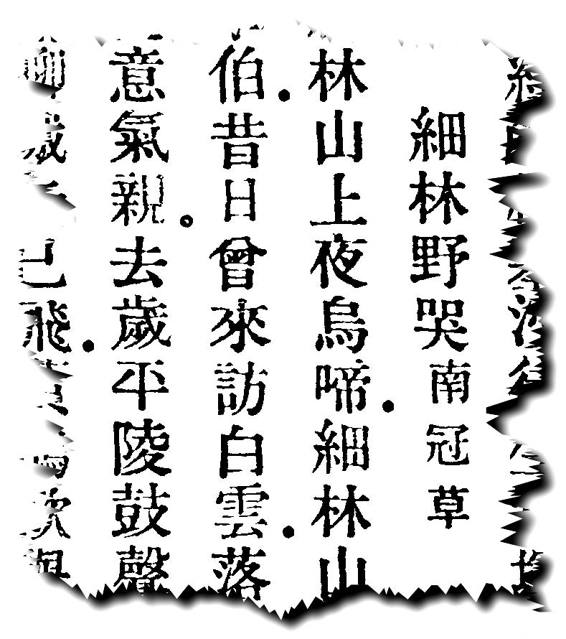
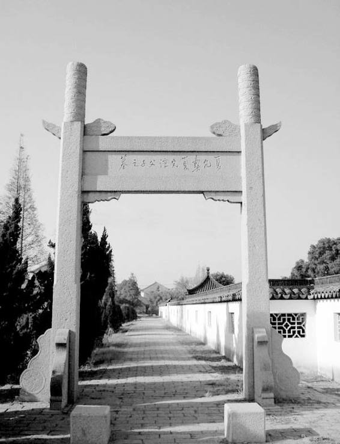

对于飞蛾扑火，完淳早就了然于胸，毋如说，他根本是抱了这种态度走完人生最后的两年。他有五言诗《精卫》：
北风荡天地，有鸟鸣空林。志长羽翼短，衔石随浮沉。崇山日以高，沧海日以深。愧非补天匹，延颈振哀音。辛苦徒自力，慷慨谁为心！惜哉志不申，道远固难任。滔滔东逝波，劳劳成古今。[32]
笺者曰：“当是乙酉国难后作，藉精卫以明心志。”精卫，是徒劳而不屈的象征。诗中以“北风”喻满清，而以鸣于空林的小鸟自比。他知道自己有志力薄、有心无力，相反，满清统治却一天天强大、稳固起来（崇山日以高，沧海日以深），他知道自己补不了天，所能做的无非是于世上发出一点悲伤的哀鸣罢了，但他只想尽这样一点点的力量，不辞徒劳，也不怕徒劳，他愿意这样汇入历史河流，成为历史的一部分。
又有咏刺秦义士荆轲的《易水歌》：
白日苍茫落易水，悲风动地萧条起。荆卿入秦功不成，遗恨骊山暮烟紫。昔年此地别燕丹，哀歌变徵风雨阑。白虹翕翕贯燕市，黄金台下阴云寒。袖中宝刀霜华重，此事千秋竟成梦。十三杀人徒尔为，百二河山俨不动。呜呼，荆卿磊落殊不伦，渐离慷慨得其真。长安无限屠刀肆，犹有吹箫击筑人！[33]
古人视秦为反文明的黑暗时代，在完淳眼中，满清便是“当代之秦”。和《精卫》一样，诗中同样明示，虽然反抗难逃“功不成”、“徒尔为”的下场，反抗者却仍是伟大无伦的英雄。这种伟大无伦在于，“长安无限屠刀肆，犹有吹箫击筑人”，中国需要这种证明。
《六君咏》[34]，为缅怀乙酉年六大死国名臣而作，分别是史可法、黄道周、刘宗周、徐汧、金声和祁彪佳，他们或毅然自裁，或战至最后一刻。完淳此作，歌美忠义的寓意无遑多言，关键是他在诗中表现的精神高度，与所写对象略无差异，而难以置信作者仅为十六七岁的孩子。他评史可法：“忠清卓荦姿，夙昔事戎马。隆望震华夷，嘉名泽风雅。”叹之“出师计不成，战死维扬野”，以“西风五丈原，冥冥云龙驾”称赞史可法的精神可与诸葛亮比肩。评黄道周“漳浦介以廉”，一生正直、清白，也指出“戎马非所长”，但认为这不重要，重要的是“破胡虽不成，报国心已毕”。说刘宗周“刘公执法臣，威仪世所则”，刘宗周司职监察工作，官左都御史，认为他对职守之忠，堪为天下之表，次而说“弟子三千人，绍兴邹鲁迹”，孟子邹人，孔子鲁人，意谓刘宗周对儒学的贡献，可比做当世孔孟。徐汧在清兵下苏州、发布薙发令后，不是简单一死了之，而是在虎丘以郑重仪式公开自裁，围观者达数千人，以此向世人昭示气节，完淳盛赞他“始知风雅儒，大勇甘沟壑”。金声是清军南下后，皖南抗清的领袖，兵败被执，拒降，临刑“谓刑者曰：‘但绝我气，无断我头。’于是，撚须仰面，饮刃而没。”[35]完淳恸之曰：“轻生贵任侠，英爽殊逼人。功名尽一剑，壮志苦不伸。”祁彪佳是刘宗周得意弟子，世代书香，绍兴祁氏旷园淡生堂，是明末最大私家藏书家，他的死，也和出身、家门一样，在六人中最恬淡宁静，当时他收到清军“檄诸生投谒”的命令，对妻子说“此非辞命所能却，若身至杭州，辞以疾，或得归耳”。“阳为治装将行者，家人信之不为意。至夜分，潜出寓园外放生碣下，投水死。先书于几云：‘某月日已治棺，寄蕺山戒珠寺，可即殓我。’其从容就义如此。”[36]所以完淳提到他，笔下也浮动着一种唯美的光彩：“中丞多风姿，简贵出尘表。修饰好羽仪，凌云独矫矫。”我们看他这些评骘，丝毫没有因对象均为名高望重的前辈而仰视的目光，俨然是平起平坐的朋友，而其从容沉静、不温不火、娓娓道来的语气，以及恰如其分、约言抉要的见地，实在不是年方十六七岁的少年所能至。这当中，除远超常人的纵览饱读，更难得的是言谈背后的高卓眼界。
他最后同时亦为其生平最杰出之创作，乃诗集《南冠草》。郭沫若的剧名即取于此。那是他从被捕起，沿途以及狱中吟得，可以说是这非凡少年向人间辞行而留下的心路历程。“草”字易解，未定之稿也，所谓“文之蒿草”，尚不足以称文，故为草。“南冠”却有典故，出《左传•成公九年》：“南冠而絷者”，当时，晋景公援郑伐楚，捉到楚臣为俘，而有此语；完淳在此借以自指——对满清来说，他也是“南冠而絷者”。
其第一首《五律•别云间》说：
三年羁旅客，今日又南冠。无限河山泪，谁言天地宽！已知泉路近，欲别故乡难。毅魄归来日，灵旗空际看。
首句可谓是对父亲死后自己生命历程的总结：父死三载，他也流浪了三年，而终以囚徒结束。“无限河山泪，谁言天地宽”，何时读来，此句都令人泪不能禁！这位脸上一定还未脱稚气的少年，那犹在发育中的胸膛，却装着祖国大好山河，为她悲恸和不忍。他已知此去绝无生还理，在心里暗暗地和乡亲、祖辈世代生息之地告别了，再回故乡时，他将作为“毅魄”，骄傲地看着自己的灵旗在空中飘扬。
第二、三、四首，分别写给嫡母盛氏、妻子钱秦篆、大姊淑吉以及他的外甥侯檠。对嫡母，他说：“古道麻衣客，空堂白发亲”，黑发人从此不能孝奉白发人，白发之人倒要面对黑发人之丧（麻衣，丧服也），他不禁叹道：“负米竟谁人？”日后，谁又来为年迈老母负米回家呢？对妻子，他满怀疚意：“忆昔结褵日，正当擐甲时。门楣齐阀阅，花烛夹旌旗”，结婚之日起，自己就被迫拿起刀枪，夫妻并无一日恩爱厮守，眼下又将永诀……末句“珍重腹中儿”，尤令人痛，此时钱氏又有身孕，而完淳却再也看不到这新的生命了，只及留下这样一句嘱托！大姊淑吉嫁与侯玄洵为妻，关于嘉定侯家的高洁，我们先前已曾介绍，所以完淳开头写道：“门阀推江左，孤忠两姓全。”夏、侯两家，都是好样的！第三句写：“愧负文姬孝，深为宅相怜”，以大姊比蔡文姬，因为淑吉也是出名的才女。他们姐弟感情很深，临别，完淳还要为着日后尽孝的重任都压在姐姐身上，而不安和抱愧。最后一句“大仇俱未报，仗尔后生贤”，是写给外甥侯檠的，他俩年纪相仿，且都富文才，平时相得甚欢，每与唱和，此时完淳留给侯檠的心愿是，牢记两家共同的大仇，未竟之事就全靠你了！

《细林野哭》片影
“‘野’在古汉语，有无家、荒芜并兼野鄙陋文诸意。‘野哭’并非只在完淳的笔下出现过⋯⋯但我感觉，似乎用于明清易代之际，这词才格外有百感交集的况味。”——本书自序。

夏氏父子之墓
位于松江昆冈荡湾村，原为夏氏宗族墓，建国后修为夏氏父子墓，墓碑为陈毅1961 年所题“民族英雄夏允彝夏完淳父子之墓”。
全部《南冠草》，计五律十首，七律三首，七古二首。我们这里不及逐一拜览，概而言之，格调无不高古，感情无不真挚，襟怀则无不深沉。它们不但应在中国诗歌和文学史上占一特殊地位，也理当是中国爱国传统教育的必选教材——如果我们的这种教育真正建立在悠久历史基础上，真正秉承从这历史中自然生发出来的至正至大精神，像夏完淳这样的少年英雄是绝不该忘却的。
但我还是忍不住再提一提《南冠草》里头两首七古《细林野哭》和《吴江野哭》，那是他解往南京途中，分别哭两位父辈的同志陈子龙和吴昜的。两诗都写得英气勃发、荡气回肠，尤其《细林野哭》，辞气和笔力很有太白遗风：
细林山上夜乌啼，细林山下秋草齐。有客扁舟不系缆，乘风直下松江西。却忆当年细林客，孟公四海文章伯。昔日曾来访白云，落叶满山寻不得……
余如“黄鹄欲举六翮折，茫茫四海将安归”、“天地跼蹐日月促，气如长虹葬鱼腹”、“抚膺一声江云开，身在罗网且莫哀”等句，也纵逸骏发、气象阔大。
骚赋之外，完淳另有一重要著作《续幸存录》。那是对《幸存录》的续写。《幸存录》写于崇祯死国之后，当时夏允彝居丧在家，痛定思痛，感到必须一探国家走到如此不可收拾地步的根源，遂有此作。但“述至先帝死社稷，遂绝笔不复纪”[37]，从万历写起，及写到崇祯之死，自己也殉了国难，独独缺了弘光这一段。他留下遗命，要完淳续完全部，可见他对儿子的才学多么信任，毫不怀疑他足以去做这样一件严肃而重要的事情。而完淳的杰出，我们都已亲眼看见，他以十六龄童，不仅承担和完成了这相当于断代国史的撰述，而且做得极为出色，高屋建瓴，器局宽宏，持言正平，议论精当，如“朝堂与外镇不和，朝堂与朝堂不和，外镇与外镇不和”[38]，“士英虽有用小人之意，而无杀君子之心”[39]，“史道邻清操有余，而才变不足；马瑶草守己狼藉，不脱豪迈之气。用兵将略，非道邻所长，瑶草亦非令仆之才。内史外马，两得其长”[40]等，皆非人云亦云而能独出己见，尤其是很好地承接了父亲《幸存录》欲跳出党派立场之外、实事求是总结亡国经验的立意。虽然后来黄宗羲对夏氏父子的表述很不高兴，认为“是非倒置”[41]，我们作为后世旁观者，却更倾向于赞同李清的观点，夏氏父子“存公又存平”[42]，是真正的良史之风。后世称完淳“夏内史”，就是因为书中发议论的段落以“内史”自名，而大家也一致公认他配得上这称呼，可见《续幸存录》作为史著的成功，以及人们对完淳作为史家的认可。历来说“文史不分家”，实际文与史断乎不同，善治史者固然未必有顶尖的文才，但顶尖的文才更未必可以成为一流的史家，因为一流史家所应备的胸襟、识学，实在是很难达到的。完淳竟以犹未弱冠的少年，将二者集于一身，对此，我每每觉得是超乎想象的事。